Ce chapitre double explore le fonctionnement cyclique de l'appareil reproducteur féminin (Ch.2) et les mécanismes de la procréation humaine (Ch.3) : fécondation, développement embryonnaire, contraception, PMA et hygiène de la grossesse.
Ovaires, trompes, utérus, vagin. Fonctions des organes.
Folliculogenèse. Ovocyte II. Comparaison ovogenèse/spermatogenèse.
Cycle ovarien 28j (folliculaire, ovulation, lutéale). Cycle utérin (règles, prolifération, sécrétion).
GnRH → FSH/LH → ovaires. Oestradiol et progestérone. Rétrocontrôles (−) et (+).
Conditions. Étapes : rencontre, pénétration, caryogamie. Segmentation. Nidation. Placenta.
Pilule (oestro-progestatifs). Stérilité masculine/féminine. FIVETE. IA. ISIC. Hygiène grossesse.
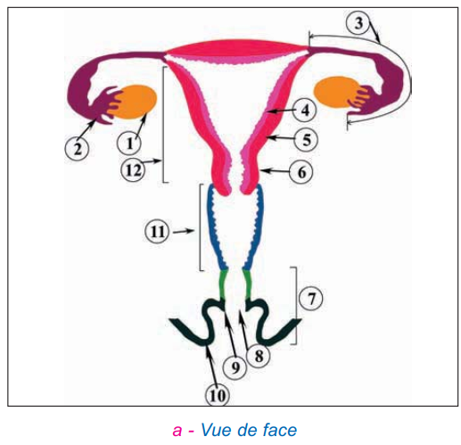
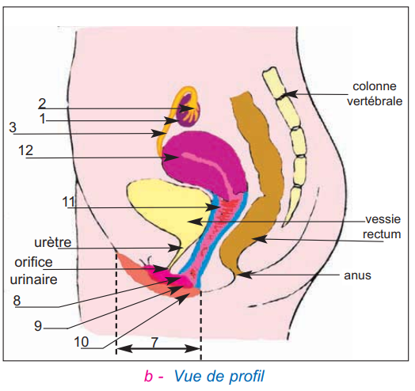
| Organe | Catégorie | Rôle |
|---|---|---|
| Ovaires ×2 | Gonades | Produisent les gamètes femelles (ovocytes) + hormones sexuelles femelles (œstradiol, progestérone) |
| Pavillons ×2 | Voies génitales | Reçoivent l'ovocyte expulsé lors de l'ovulation |
| Trompes (oviductes) ×2 | Voies génitales | Conduisent l'ovocyte (ou l'œuf) vers l'utérus. Lieu de la fécondation (tiers supérieur) |
| Utérus | Voies génitales | Lieu de la nidation et de la grossesse. Endomètre (muqueuse) + myomètre (muscle) |
| Vagin | Organe de copulation | Reçoit le sperme lors de l'éjaculation + voie d'accouchement |
| Vulve (grandes lèvres, petites lèvres, clitoris) | Organes externes | Organes génitaux externes |
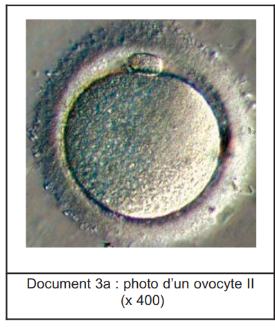
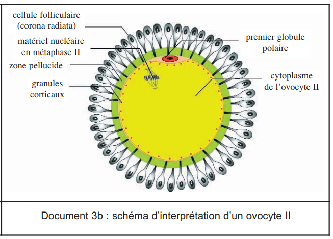
| Critère | Ovocyte II | Spermatozoïde |
|---|---|---|
| Haploïdie | n = 23 chromosomes ✅ | n = 23 chromosomes ✅ |
| Taille | ≈ 100 μm (grande cellule) | ≈ 60 μm (petite cellule) |
| Forme | Sphérique | Allongée (tête + PI + flagelle) |
| Mobilité | Immobile | Mobile (flagelle + mitochondries) |
| Réserves | Cytoplasme volumineux, riche en réserves | Cytoplasme réduit au minimum |
| Méiose | Bloquée en métaphase II → s'achève lors de la fécondation | Méiose complète (4 spermatides → 4 SPZ) |
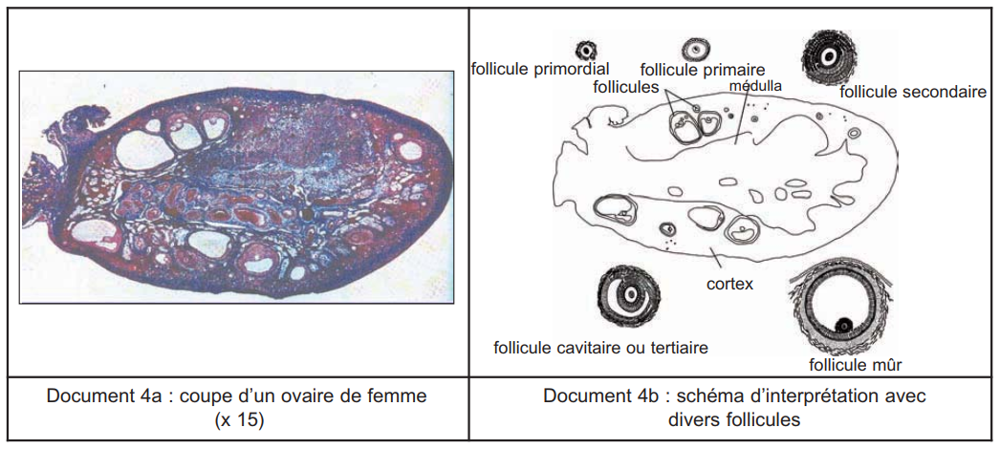
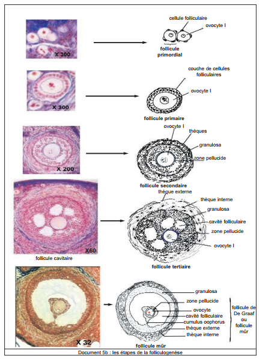
| Stade folliculaire | Structure | Moment |
|---|---|---|
| Primordial | Ovocyte I + 3–4 cellules folliculaires aplaties | Dès la naissance |
| Primaire | Ovocyte I + 1 assise de cellules folliculaires | Début puberté |
| Secondaire | Ovocyte I + plusieurs couches + thèques interne (sécrétrice) et externe (protectrice) | Phase folliculaire |
| Tertiaire (cavitaire) | Idem + cavité folliculaire (liquide folliculaire) | Phase folliculaire |
| De Graaf (mûr) | Grande cavité (antrum). Fait saillie en surface. Se rompt → ovulation | Jour 14 du cycle |
Le cycle sexuel dure 28 jours en moyenne et comporte deux cycles synchronisés et coordonnés : le cycle ovarien (évolution des structures ovariennes) et le cycle utérin (évolution de la muqueuse utérine).
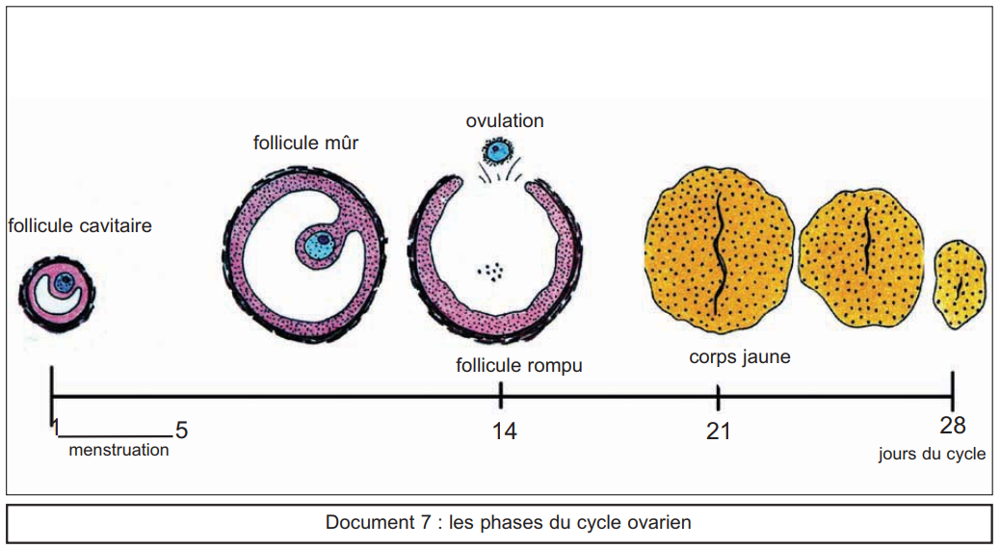
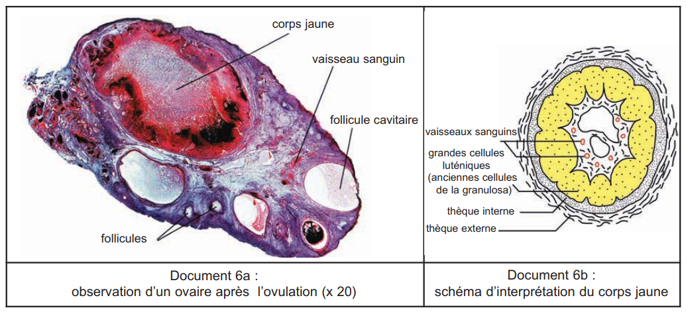
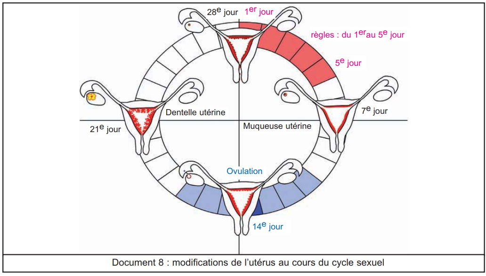
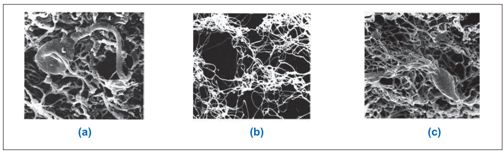
| Phase | Jours | État de la muqueuse utérine (endomètre) | Hormone responsable |
|---|---|---|---|
| Menstruation (règles) | J1 → J5 | Nécrose + desquamation de la partie supérieure → hémorragie (4–5 jours). Muqueuse réduite à 1 mm. | Chute œstradiol + progestérone (régression corps jaune) |
| Phase post-menstruelle (prolifération) | J5 → J14 | Épaississement (1→3 mm), vascularisation, développement des glandes en tubes | Œstradiol (follicule en développement) |
| Phase pré-menstruelle (sécrétion) | J14 → J28 | Épaississement (3→7 mm), glandes sinueuses «dentelle utérine», vaisseaux spiralés, sécrétions. Prépare la nidation. | Œstradiol + Progestérone (corps jaune) |
Le cycle sexuel est contrôlé par l'axe hypothalamus → hypophyse → ovaires → utérus avec des rétrocontrôles à la fois négatifs ET positifs de l'œstradiol sur l'axe H-H selon sa concentration.
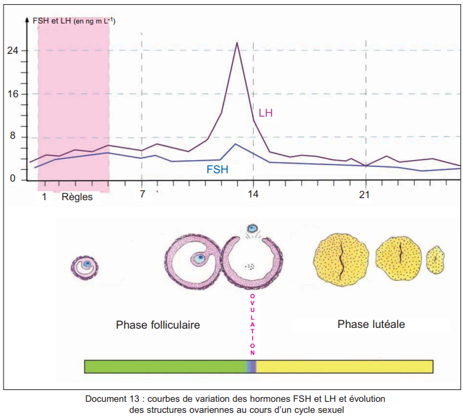
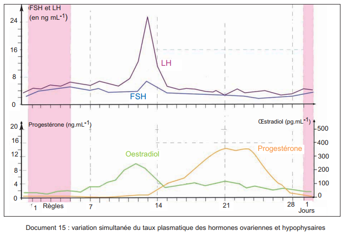
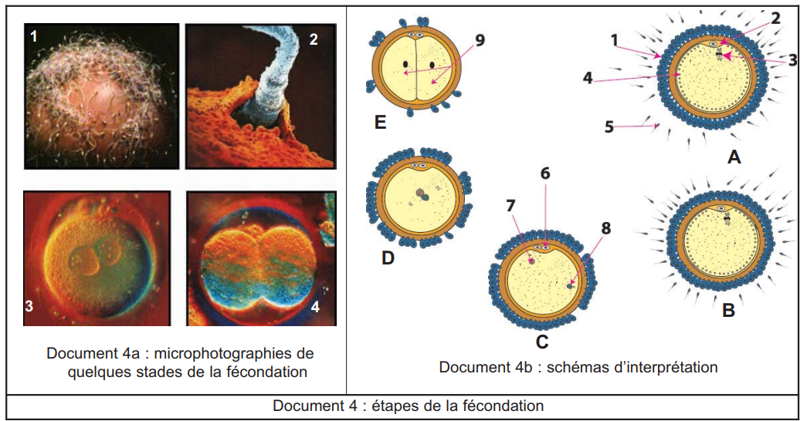
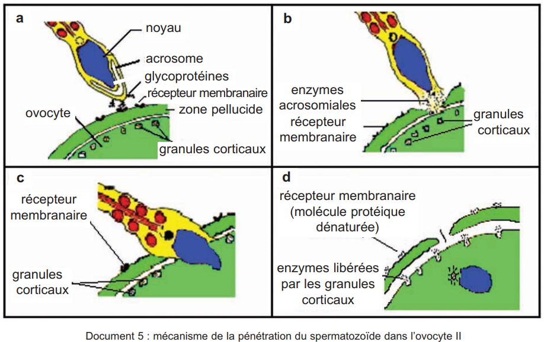
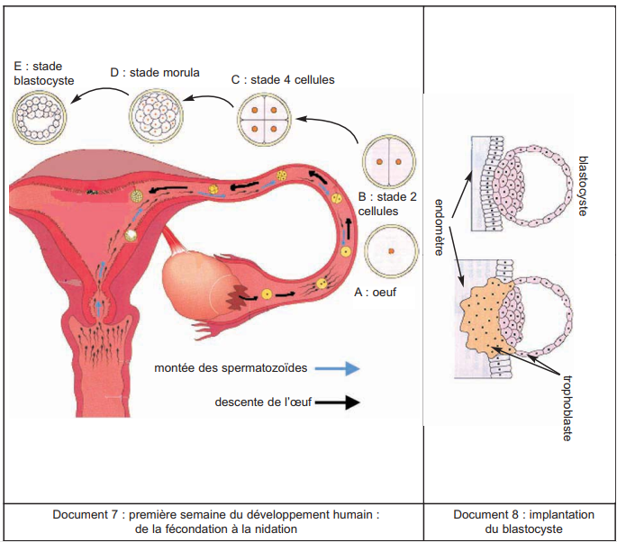
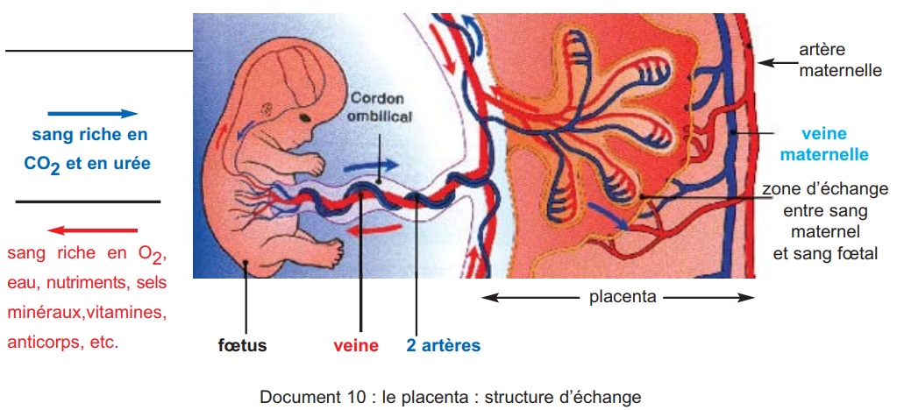
| Rôle du placenta | Détail |
|---|---|
| Échanges nutritifs | Sang maternel → O₂, nutriments, eau, minéraux, vitamines, anticorps → sang fœtal via villosités |
| Échanges excréteurs | Sang fœtal → CO₂ + urée → sang maternel → éliminés par poumons et reins de la mère |
| Barrière sélective | Bactéries et parasites : ne passent PAS. Virus, alcool, nicotine, cocaïne, médicaments : PASSENT → danger pour le fœtus |
| Fonction endocrine | Dès nidation : trophoblaste sécrète HCG (maintient corps jaune). À partir de la 11ème semaine : placenta sécrète progestérone + œstrogènes (relais du corps jaune) |
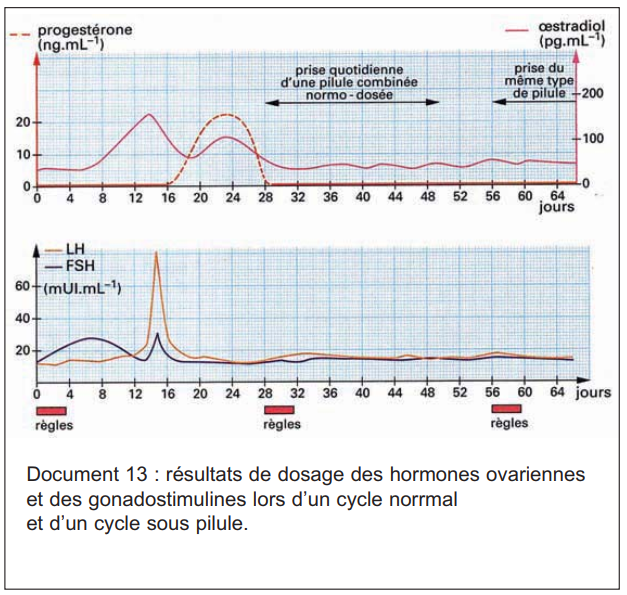
Composition : progestatif de synthèse (acétate de cyprotérone) + œstrogène de synthèse (éthinyloestradiol). Prise quotidienne pendant 21 jours, arrêt 7 jours (→ règles de privation).
| Technique PMA | Principe | Indication |
|---|---|---|
| IA (Insémination Artificielle) | Dépôt de spermatozoïdes dans la cavité utérine par sonde (IAC = avec sperme du conjoint) | Oligospermie modérée, glaire cervicale hostile |
| FIVETE (Fécondation In Vitro et Transfert d'Embryon) | 1. Stimulation ovarienne (FSH) → ponction ovocytes. 2. Mise en contact gamètes in vitro → embryon. 3. Transfert embryon dans l'utérus. | Obstruction des trompes, stérilité masculine modérée |
| ISIC (Injection Intra-Cytoplasmique) | Sélection d'1 spermatozoïde → injection directe dans le cytoplasme de l'ovocyte à la micropipette | Stérilité masculine sévère (très peu de SPZ, mobilité très réduite) |
| Substance | Risques pour le fœtus |
|---|---|
| Alcool | SAF (Syndrome d'Alcoolisation Fœtale) : microcéphalie, retard mental, malformations du visage. Risque × 3–4. Mortalité embryonnaire précoce ↑. |
| Tabac (nicotine) | Bec de lièvre (risque × 2–3), poids réduit (−170 g), taille réduite, mortalité périnatale ↑ |
| Cocaïne, drogues | Malformations multiples, retard croissance, mort in utero |
| Médicaments (tétracyclines, barbituriques, thalidomide…) | Anomalies dentaires, convulsions, phocomélie (membres soudés au tronc) |
| Virus | Rubéole → surdité, malformations cardiaques. VIH → transmission mère-enfant |